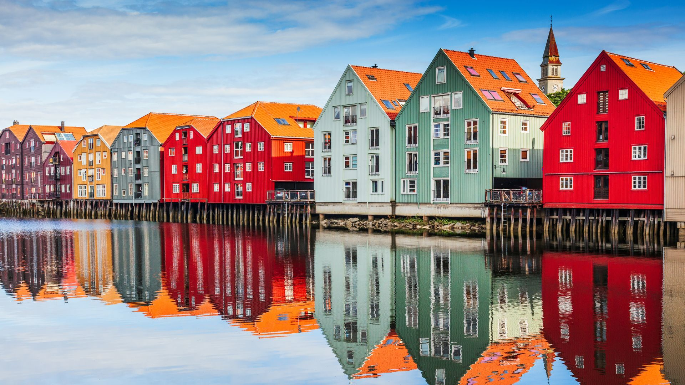
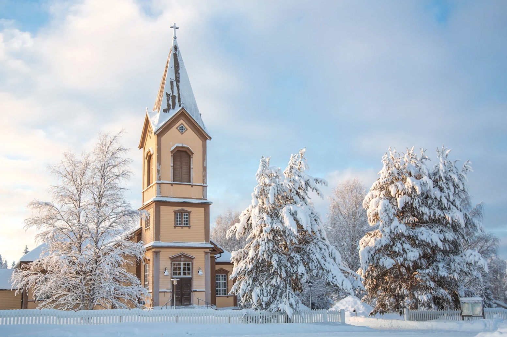

A wonderful country
Lapland is a region located in northern Europe, primarily within the Arctic Circle. It spans across several countries, including Norway, Sweden, Finland, and Russia, with the majority of its land area located in Finland. Lapland is known for its unique and stunning natural landscapes, which include vast forests, snow-covered tundras, and numerous lakes and rivers. It is also home to several national parks. In addition to its natural beauty, Lapland is also famous for being the home of the indigenous Sami people, who have a rich cultural heritage and traditions that have been preserved for generations. During the winter months, the region experiences long periods of darkness, which creates the perfect conditions for viewing the spectacular Aurora Borealis.

Tailor-made safaris in Lapland: our personal approach to creating your dream trip
At Lapland World, we understand that every traveller is unique and that every client has different expectations. That's why we work with each client to create a personalised itinerary that meets their needs and desires.We offer a variety of activities so that our clients can discover Lapland at their own pace. If you are looking to relax, we can offer you a traditional Finnish sauna. If you are looking for a thrill, we have snowmobile tours to take you through the snowy landscape of Lapland. If you are interested in fishing, we have local guides who will accompany you for an authentic fishing experience. We also offer husky and reindeer sled rides, which take you through the forests and snowy plains to discover the local wildlife. We pride ourselves on offering quality trips, with personal service and attention to every detail. We work hard to ensure that each trip is unique and memorable for our clients. We look forward to helping you create your next unforgettable trip to Lapland.

Laura
"We went on a snowmobile safari for a week as a family with our two children. The experience was incredible, we were able to see the northern lights, discover the Lappish culture by meeting the locals, enjoy a reindeer ride. The days were busy, but in the evenings we were able to relax by the fire in our wooden chalets. This trip will stay with us forever. I recommend it 100%."